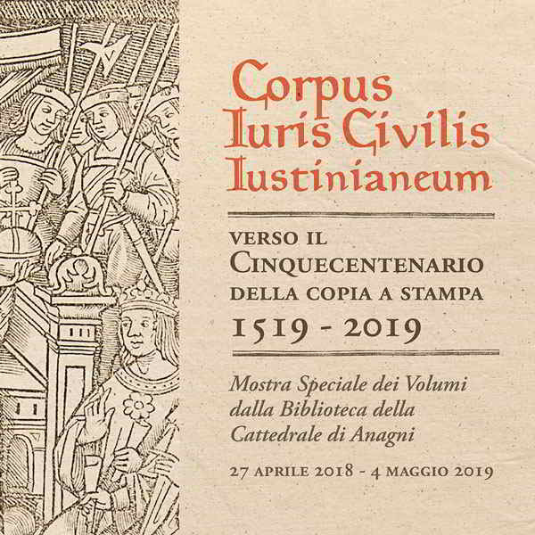
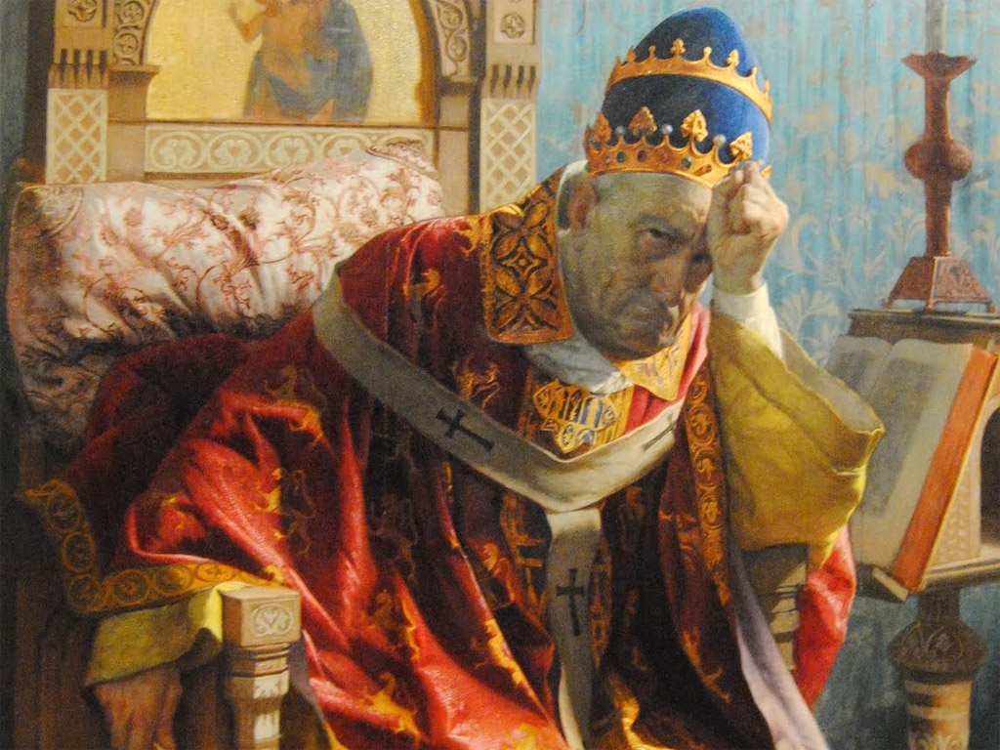

⠀
⠀
3
⠀
⠀
6
⠀
⠀
9
⠀
⠀
12
⠀
⠀
15
⠀
⠀
18
⠀
⠀
21
⠀
⠀
24
Quando si parte il gioco de la zara,
colui che perde si riman dolente,
repetendo le volte, e tristo impara;
con l’altro se ne va tutta la gente;
qual va dinanzi, e qual di dietro il prende,
e qual dallato li si reca a mente;
el non s’arresta, e questo e quello intende;
a cui porge la man, più non fa pressa;
e così da la calca si difende.
Tal era io in quella turba spessa,
volgendo a loro, e qua e là, la faccia,
e promettendo mi sciogliea da essa.
Quiv’era l’Aretin che da le braccia
fiere di Ghin di Tacco ebbe la morte,
e l’altro ch’annegò correndo in caccia.
Quivi pregava con le mani sporte
Federigo Novello, e quel da Pisa
che fé parer lo buon Marzucco forte.
Vidi conte Orso e l’anima divisa
dal corpo suo per astio e per inveggia,
com’e’ dicea, non per colpa commisa;
Pier da la Broccia dico; e qui proveggia,
mentr’è di qua, la donna di Brabante,
sì che però non sia di peggior greggia.
Qui Dante incontrerà 3 anime, le quali chiederanno a Dante stesso (la medesima cosa chiesta dalle anime della schiera precedente), ovvero di pregare per loro: i suffragi. Questo perché per le anime del Purgatorio vale una particolare legge: se si prega per tali anime, vengono scontati gli anni di pena. Dante comunque non precisa gli anni di pena di queste anime, ma i critici presuppongono che siano in pena tempo corrispondente agli anni in cui in vita sono stati peccatori (per assimilazione a quelli precedenti).

⠀
⠀
27
⠀
⠀
30
⠀
⠀
33
⠀
⠀
36
⠀
⠀
39
⠀
⠀
42
⠀
⠀
45
⠀
⠀
48
⠀
⠀
51
⠀
⠀
54
⠀
⠀
57
Come libero fui da tutte quante
quell’ombre che pregar pur ch’altri prieghi,
sì che s’avacci lor divenir sante,
io cominciai: “El par che tu mi nieghi,
o luce mia, espresso in alcun testo
che decreto del cielo orazion pieghi;
e questa gente prega pur di questo:
sarebbe dunque loro speme vana,
o non m’è ‘l detto tuo ben manifesto?”.
Ed elli a me: “La mia scrittura è piana;
e la speranza di costor non falla,
se ben si guarda con la mente sana;
ché cima di giudicio non s’avvalla
perché foco d’amor compia in un punto
ciò che de’ sodisfar chi qui s’astalla;
e là dov’io fermai cotesto punto,
non s’ammendava, per pregar, difetto,
perché ‘l priego da Dio era disgiunto.
Veramente a così alto sospetto
non ti fermar, se quella nol ti dice
che lume fia tra ‘l vero e lo ‘ntelletto.
Non so se ‘ntendi: io dico di Beatrice;
tu la vedrai di sopra, in su la vetta
di questo monte, ridere e felice”.
E io: “Segnore, andiamo a maggior fretta,
ché già non m’affatico come dianzi,
e vedi omai che ‘l poggio l’ombra getta”.
“Noi anderem con questo giorno innanzi”,
rispuose, “quanto più potremo omai;
ma ‘l fatto è d’altra forma che non stanzi.
Prima che sie là sù, tornar vedrai
colui che già si cuopre de la costa,
sì che ‘ suoi raggi tu romper non fai.
Qui Dante, quasi infastidendo Virgilio, gli chiede come sia possibile che nell’Eneide, nonostante si pregasse per i defunti, la loro pena non venisse scontata e che di conseguenza non andassero in Paradiso (o per meglio dire nei Campi Elisi). Insomma, Dante glielo chiede proprio perché in un passo dell’Eneide, Virgilio dice che i suffragi non hanno effetto. Dante nota quindi questa incongruenza e pone la domanda a Virgilio, il quale gli riferisce che nell’Eneide i suffragi non hanno effetto dato che tutti i defunti sono pagani (non avevano la Grazia Divina). Dopodiché gli suggerisce anche di accontentarsi di questa spiegazione perché una spiegazione più esaustiva gliela conferirà Beatrice nel Paradiso. Sommariamente in questi versi viene ribadita la stessa tematica trattata precedentemente: i suffragi che valgono per le anime del Purgatorio.

⠀
⠀
60
⠀
⠀
63
⠀
⠀
66
⠀
⠀
69
⠀
⠀
72
⠀
⠀
75
Ma vedi là un’anima che, posta
sola soletta, inverso noi riguarda:
quella ne ‘nsegnerà la via più tosta”.
Venimmo a lei: o anima lombarda,
come ti stavi altera e disdegnosa
e nel mover de li occhi onesta e tarda!
Ella non ci dicea alcuna cosa,
ma lasciavane gir, solo sguardando
a guisa di leon quando si posa.
Pur Virgilio si trasse a lei, pregando
che ne mostrasse la miglior salita;
e quella non rispuose al suo dimando,
ma di nostro paese e de la vita
ci ‘nchiese; e ‘l dolce duca incominciava
“Mantua...”, e l’ombra, tutta in sé romita,
surse ver’ lui del loco ove pria stava,
dicendo: “O Mantoano, io son Sordello
de la tua terra!”; e l’un l’altro abbracciava.
 Dante incontrò Sordello da Goito, un poeta mantovano vissuto nella prima metà del 1300.
Dante e Virgilio non sanno dove andare, non sanno che strada prendere per proseguire il loro viaggio
e decidono di chiedere indicazioni ad un’anima che era lì che se ne stava in disparte rispetto alle
altre e che, per questo, attira l’attenzione.
Dante incontrò Sordello da Goito, un poeta mantovano vissuto nella prima metà del 1300.
Dante e Virgilio non sanno dove andare, non sanno che strada prendere per proseguire il loro viaggio
e decidono di chiedere indicazioni ad un’anima che era lì che se ne stava in disparte rispetto alle
altre e che, per questo, attira l’attenzione.
Virgilio chiede informazioni per capire quale fosse la via più breve, ma l’anima non risponde perché
voleva prima presentarsi. Troviamo quest’anima di Sordello in un atteggiamento un po’ sdegnoso,
tipico delle classi aristocratiche le quali non parlavano se prima non si presentavano. Ciò che faceva
l’anima è guardarli come un leone che scruta la sua preda e, nel momento in cui Virgilio si avvicina
ulteriormente per presentarsi riesce a dire soltanto una parola: “Mantua”. (sappiamo che Virgilio
nasce a Mantova, nella cittadina di Andes). Lui voleva dire: “Mantova mi generò”, un verso che lui
stesso scrisse ma non riuscì a dirla poiché l’ombra di Sordello fu presa da un amore di patria in
quanto anch’egli era mantovano (Goito, nei pressi di Mantova). A tale punto, si lancia verso Virgilio e
si abbracciano e a tale punto Sordello esclama: “O Mantoano, io son Sordello de la tua terra!”.
Questo slancio patriottico di Sordello nei confronti di Virgilio scatena l’invettiva Dantesca (vv. 76-
126, cuore dell’invettiva contro l’Italia).
⠀
⠀
78
Ahi serva Italia, di dolore ostello,
nave sanza nocchiere in gran tempesta,
non donna di provincie, ma bordello!
L’Italia è divisa in tante entità politiche, serva della corruzione, del potere straniero, dei gruppi
partigiani, divisa tra Guelfi e Ghibellini che influenzano molto il pensiero di Dante. Essa si dimostra
come “ostello di dolore”, luogo che accoglie dolore; “nave senza nocchiere in gran tempesta”,
metafora dove si paragona ad una nave senza guida in quanto non vi è la figura di un imperatore e
quindi viene anche definita “non donna di province, ma bordello!”, non padrona di province o terra
fiera delle sue città ma quasi come donna che si asservisce agli altri. È come se l’Italia si fosse
prostituita, avesse perso la sua libertà per la corruzione e gli odi politici
⠀
⠀
81
⠀
⠀
84
Quell’anima gentil fu così presta,
sol per lo dolce suon de la sua terra,
di fare al cittadin suo quivi festa;
e ora in te non stanno sanza guerra
li vivi tuoi, e l’un l’altro si rode
di quei ch’un muro e una fossa serra.
 Qui Dante dice che l’anima gentile, Sordello, solo al sentir il nome di Mantova, fu veloce
nel moto di affetto nei confronti di Virgilio; invece adesso, nella realtà vera e quindi nel mondo
dei vili, gli uomini si combattono l’un l’altro, soprattutto i medesimi cittadini, quelli che sono
rinchiusi in un solo fossato o in un solo muro (per esempio le città medievali). Quindi, tale lotta,
coinvolge non solo città e città ma anche cittadini della stessa città.
Qui Dante dice che l’anima gentile, Sordello, solo al sentir il nome di Mantova, fu veloce
nel moto di affetto nei confronti di Virgilio; invece adesso, nella realtà vera e quindi nel mondo
dei vili, gli uomini si combattono l’un l’altro, soprattutto i medesimi cittadini, quelli che sono
rinchiusi in un solo fossato o in un solo muro (per esempio le città medievali). Quindi, tale lotta,
coinvolge non solo città e città ma anche cittadini della stessa città.
⠀
⠀
87
Cerca, misera, intorno da le prode
le tue marine, e poi ti guarda in seno,
s’alcuna parte in te di pace gode.
 Dante si rivolge all’Italia tramite un’apostrofe dicendole di guardarsi intorno perché non troverà
nessun posto dove ci sarà pace poiché tutti sono in guerra.
Dante si rivolge all’Italia tramite un’apostrofe dicendole di guardarsi intorno perché non troverà
nessun posto dove ci sarà pace poiché tutti sono in guerra.
⠀
⠀
90
Che val perché ti racconciasse il freno
Iustiniano, se la sella è vòta?
Sanz’esso fora la vergogna meno.
 L’imperatore Giustiniano fece una cosa fondamentale per chi studia oggi legge: nel VI secolo d.C. fece raccogliere tutte quante le leggi dell’impero in un unico codice chiamatosi “codice di Giustiniano/corpus iuris civilis iustinianei”. Dante replica dicendo a cosa sia servito se Giustiniano abbia messo ordine alle leggi dell’Italia se ora quest’ultima sia senza leggi, se adesso le leggi che ci sono non valgono per tenere in armonia i suoi cittadini. Sarebbe stato meglio non averle quelle leggi almeno non ci sarebbe stata la vergogna di assistere ad uno spettacolo indegno.
⠀
⠀
93
⠀
⠀
96
Ahi gente che dovresti esser devota,
e lasciar seder Cesare in la sella,
se bene intendi ciò che Dio ti nota,
guarda come esta fiera è fatta fella
per non esser corretta da li sproni,
poi che ponesti mano a la predella.
 Dante, qui, critica pure la chiesa e precisamente il “temporalismo ecclesiastico”, il potere temporale (politico) della chiesa. La chiesa deve avere il potere religioso mentre l’imperatore quello temporale (temporale deriva da “tempus” ad indicare tutta la sfera dell’esistenza non sottoposta a Dio); Bonifacio VIII, il papa che ha fatto sì che Dante potesse rimanere in esilio perché il papa orchestrò la trappola in cui Dante sarebbe caduto se fosse tornato a Firenze in quanto Dante si opponeva al papa, era uno dei tanti papi che non aveva solo il potere religioso nelle proprie mani ma voleva essere anche un monarca. Questo quindi è fonte di corruzione, di allontanamento dai principi religiosi ma comunque la chiesa si è dimostrata incompetente nel gestire il potere politico e per questo l’Italia è in crisi.
⠀
⠀
99
⠀
⠀
102
⠀
⠀
105
⠀
⠀
108
⠀
⠀
111
⠀
⠀
114
⠀
⠀
117
O Alberto tedesco ch’abbandoni
costei ch’è fatta indomita e selvaggia,
e dovresti inforcar li suoi arcioni,
giusto giudicio da le stelle caggia
sovra ’l tuo sangue, e sia novo e aperto,
tal che ’l tuo successor temenza n’aggia!
Ch’avete tu e ’l tuo padre sofferto,
per cupidigia di costà distretti,
che ’l giardin de lo ’mperio sia diserto.
Vieni a veder Montecchi e Cappelletti,
Monaldi e Filippeschi, uom sanza cura:
color già tristi, e questi con sospetti
Vien, crudel, vieni, e vedi la pressura
d’i tuoi gentili, e cura lor magagne;
e vedrai Santafior com’è oscura!
Vieni a veder la tua Roma che piagne
vedova e sola, e dì e notte chiama:
"Cesare mio, perché non m’accompagne?".
Vieni a veder la gente quanto s’ama!
e se nulla di noi pietà ti move,
a vergognar ti vien de la tua fama.
 Qui la critica è nei confronti dell’imperatore. Per l’epoca in cui Dante vive, l’imperatore è Alberto I
d’Austria citato proprio nel verso 97 con un’apostrofe “O Alberto tedesco...”. Lo chiama “tedesco”
accusandolo così di essersi occupato solo delle cose di Germania abbandonando così l’Italia indomita
e selvaggia dove vi sono solo famiglie in lotta tra di loro dicendo: “Vieni a veder la tua Roma che
piagne vedova e sola e dì e notte chiama...” rappresentando Roma come se fosse l’Italia tutta la
quale si chiede anche: “Cesare mio, perché non m’accompagne?”, perché vuole essere guidata da un
imperatore. Tant’è che, a tale proposito, Dante esclama ironicamente: “Vieni a veder la gente
quanto s’ama!”
Qui la critica è nei confronti dell’imperatore. Per l’epoca in cui Dante vive, l’imperatore è Alberto I
d’Austria citato proprio nel verso 97 con un’apostrofe “O Alberto tedesco...”. Lo chiama “tedesco”
accusandolo così di essersi occupato solo delle cose di Germania abbandonando così l’Italia indomita
e selvaggia dove vi sono solo famiglie in lotta tra di loro dicendo: “Vieni a veder la tua Roma che
piagne vedova e sola e dì e notte chiama...” rappresentando Roma come se fosse l’Italia tutta la
quale si chiede anche: “Cesare mio, perché non m’accompagne?”, perché vuole essere guidata da un
imperatore. Tant’è che, a tale proposito, Dante esclama ironicamente: “Vieni a veder la gente
quanto s’ama!”
⠀
⠀
120
⠀
⠀
123
⠀
⠀
126
E se licito m’è, o sommo Giove
che fosti in terra per noi crocifisso,
son li giusti occhi tuoi rivolti altrove?
O è preparazion che ne l’abisso
del tuo consiglio fai per alcun bene
in tutto de l’accorger nostro scisso?
Ché le città d’Italia tutte piene
son di tiranni, e un Marcel diventa
ogne villan che parteggiando viene.
Qui si rivolge a Dio (chiamandolo anche Giove, padre degli dei, poiché questi sono momenti in cui
omaggia anche la cultura classica) e Dante, rivolgendosi a Dio, gli dice che anche lui sembra aver
abbandonato l’Italia a sé stessa e sembra che lui abbia rivolto gli occhi altrove e non si accorga della
situazione di corruzione, di discordi interni in cui l’Italia si trova.

⠀
⠀
129
⠀
⠀
132
⠀
⠀
135
⠀
⠀
138
⠀
⠀
141
⠀
⠀
144
⠀
⠀
147
⠀
⠀
150
151
Fiorenza mia, ben puoi esser contenta
di questa digression che non ti tocca,
mercé del popol tuo che si argomenta.
Molti han giustizia in cuore, e tardi scocca
per non venir sanza consiglio a l’arco;
ma il popol tuo l’ ha in sommo de la bocca.
Molti rifiutan lo comune incarco;
ma il popol tuo solicito risponde
sanza chiamare, e grida: "I’ mi sobbarco!".
Or ti fa lieta, ché tu hai ben onde:
tu ricca, tu con pace e tu con senno!
S’io dico ’l ver, l’effetto nol nasconde.
Atene e Lacedemona, che fenno
l’antiche leggi e furon sì civili,
fecero al viver bene un picciol cenno
verso di te, che fai tanto sottili
provedimenti, ch’a mezzo novembre
non giugne quel che tu d’ottobre fili.
Quante volte, del tempo che rimembre,
legge, moneta, officio e costume
hai tu mutato, e rinovate membre!
E se ben ti ricordi e vedi lume,
vedrai te somigliante a quella inferma
che non può trovar posa in su le piume,
ma con dar volta suo dolore scherma.
Qui si tratta dell’invettiva contro Firenze; Dante osserva ironicamente che Firenze può essere lieta
del fatto di non essere toccata da questa digressione, visto che i suoi cittadini contribuiscono alla sua
pace. Sempre ironicamente, afferma che molti sono giusti e ma restii a emettere giudizi; mentre in realtà,
i fiorentini non hanno alcun timore di ciò, riempendosi la bocca di giustizia. Afferma che molti rifiutano gli uffici
pubblici, mentre in realtà i fiorentini sono fin troppo solleciti ad assumersi le cariche politiche.
Continuando con la sua antifrasi, Dante scrive che Firenze dev'essere lieta, perché è ricca, pacifica
e assennata: Atene e Sparta, città ricordate per le prime leggi scritte, diedero un piccolo contributo
al vivere civile rispetto a Firenze, che, nella realtà dei fatti, emette deliberazioni così sottili (cioè esili) che
quelle di ottobre non arrivano a metà novembre. Dante infine, paragona Firenze a un'inferma che
non trova riposo nel letto e che cerca di lenire le sue sofferenze rigirandosi di continuo.